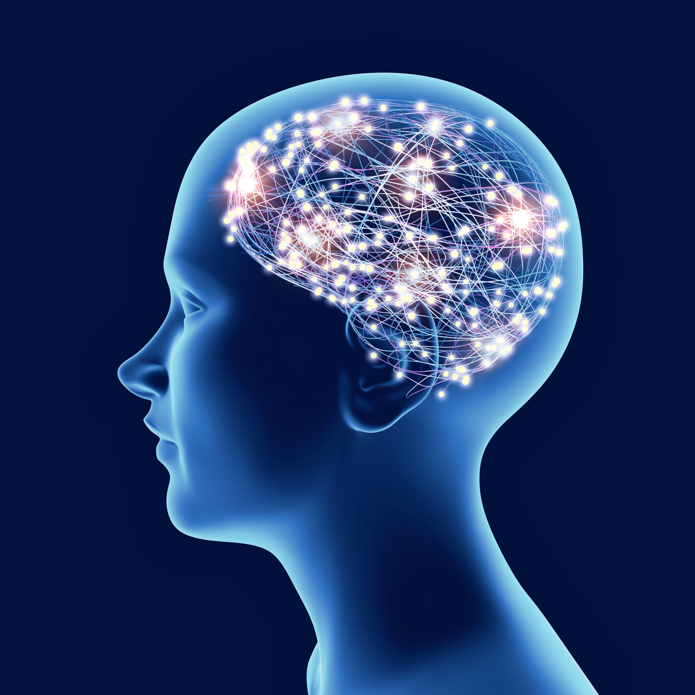

My Quarrel With Free Will

Free will is defined as the capability to take actions independent of external forces, completely at an individual’s discretion. Alternatively, free will can be summed up as the ability to do otherwise. It is intuitive for people to feel like they have a choice in their behaviors, but factors in the universe say otherwise. Recently, findings in neuroscience and psychology have raised questions about free will, leading to the revitalization of an ancient question: Do humans possess free will? There are three distinctive views on free will: Determinism, Libertarian Free Will, and Compatibilism. My personal position on Free Will is Determinism. It's commonly misunderstood that determinism claims we cannot make choices. This is not the case, rather it claims that these choices are causal, like anything else in the universe. Determinism asks the question: Does free will really exist if we can only do what we want, but not choose what we want? In this article, I will explore the arguments against free will, supported by the nature of causality and the presence of subconscious decisions that render the concept of free will refutable. Furthermore, the inability to alter our desires, which is the basis for our choices, builds upon the illusion of free will. The stated arguments will serve as the foundation for discerning whether free will exists or not.
Argument From Neuroscience

Consciously made decisions are always preceded by subconscious neural activations that occur before the decision. Benjamin Libet was a pioneer in neuroscience during the 1970s. He famously ran an experiment that contested the reality of free will. In his research, he found that “the RP culminating in the execution of the movement starts in the prefrontal motor areas long before the time when the subject seems to have made the decision: participants became aware of their intention to take action about 350 milliseconds after the onset of such potential” (Lavazza 14). RP stands for readiness potential, which is when our brains send neurological signals in preparation for an action. Libet’s experiment demonstrates that our brains are not only preparing for decisions before we even think of them but are also deciding before we do. If our decisions are enacted through something we cannot control (our subconsciousness), we therefore do not have free will.
Argument From Causality

The universe is deterministic in nearly every aspect. In Newtonian physics, its first fundamental law is that: “...every object will remain at rest or in uniform motion in a straight line unless compelled to change its state by the action of an external force” (Nasa.gov 4). Free will is the capacity to act independent of an external force, for an individual to practice free will, they would need to break Newton’s first law of physics, acting with self-direction. But nothing can act with self-direction; for example, tennis ball does not decide where it bounces when it is hit. So how are humans any different? Because we are beings of consciousness? Science cannot directly prove the origins of consciousness, but with general reason, one can assume that our behaviors and beliefs stem from our brain. This can be shown with the change of behaviors in Phineas Gage, which turned the well-mannered, hard-working, religious railroad worker into an incoherent drunkard when his frontal lobe was pierced by a railway beam (Guy-Evans 3). If it is true that our behaviors stem from our brain and its development, then it is also true that the neurons that lead to a functioning brain directly control our behavior. These neurons are comprised of atomic and subatomic particles, which obey Newtonian laws, meaning that our behaviors are due to external forces outside of our control.